PASS block-border-width-thick · per-side

Box with asymmetric per-side solid border widths (6/14/22/30px) verifying each edge thickness independently.


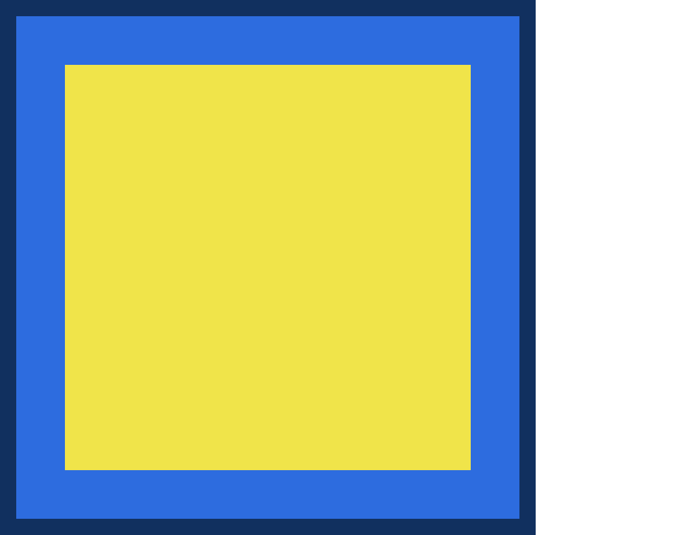
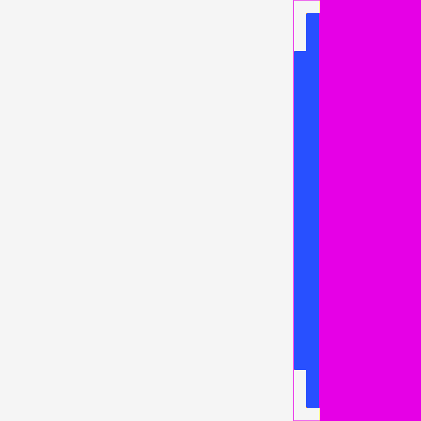

| class | regions | pixels | union bbox (CSS px) | largest px | maximum magnitude |
|---|---|---|---|---|---|
| ColorErr | 1 | 125 | 155,0 → 155,40 | 125 | total 0.2% · largest 0.2% |
| class | bbox (CSS px) | area% | magnitude | reason |
|---|---|---|---|---|
| AntialiasCoverage | 155,0 → 155,40 | 0.2 | ΔRGB(-177,61,152) | antialiasing coverage residue on a shared outline |
1<!DOCTYPE html>
2<html lang="en">
3<head>
4<meta charset="utf-8">
5<style>
6 @page { size: 224px 104px; margin: 0; }
7 html { font-family: ParitySans; line-height: 1.5; }
8 * { margin: 0; box-sizing: border-box; }
9 html, body { background: #ffffff; }
10 .unit {
11 display: inline grid;
12 grid-template-columns: 35px 35px;
13 width: 74px;
14 height: 40px;
15 margin-right: 6px;
16 background: #c62828;
17 }
18 .unit span {
19 display: block;
20 height: 40px;
21 background: #0a7f2e;
22 }
23 .unit span + span { background: #1565c0; }
24</style>
25</head>
26<body>
27 <div class="unit"><span></span><span></span></div>
28 <div class="unit"><span></span><span></span></div>
29</body>
30</html>

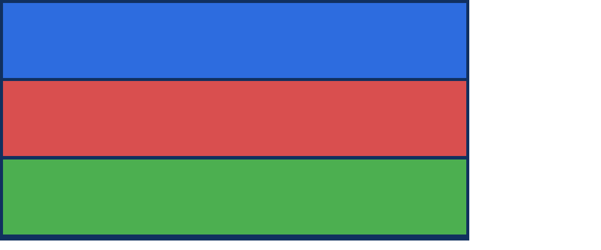


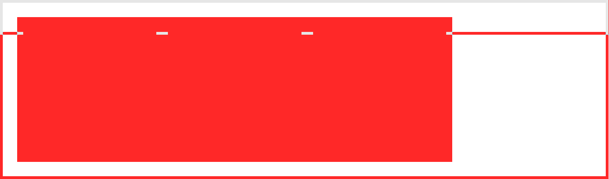


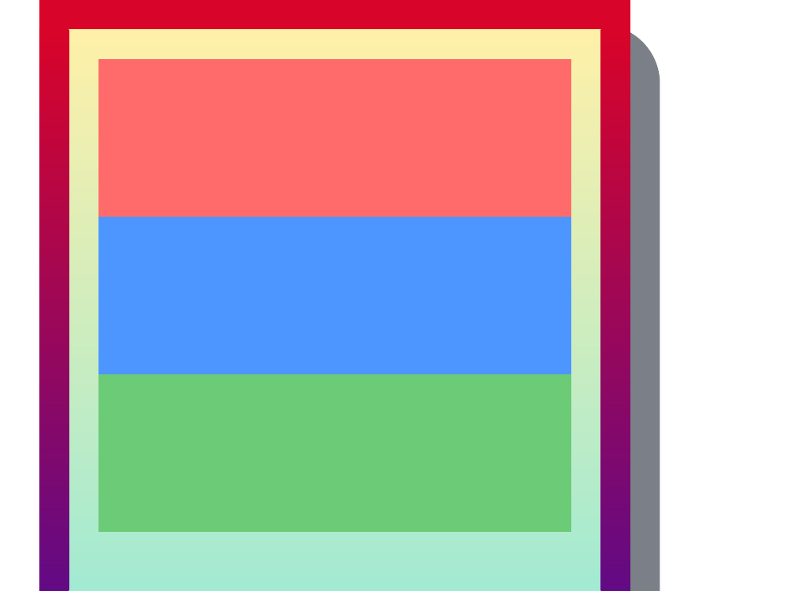
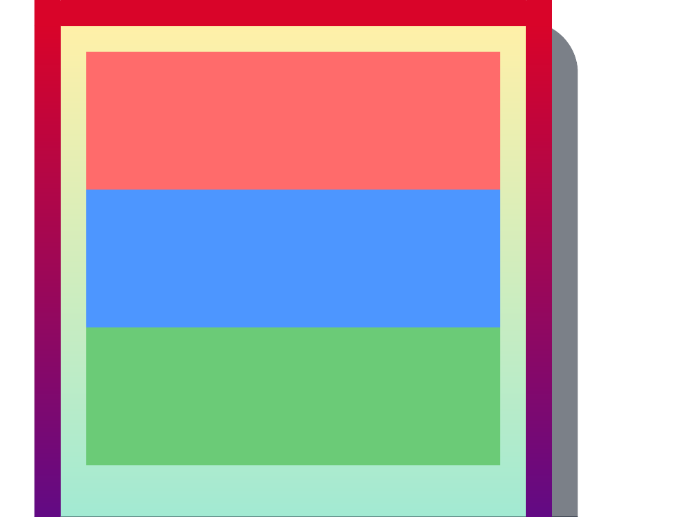
| class | regions | pixels | union bbox (CSS px) | largest px | maximum magnitude |
|---|---|---|---|---|---|
| Extra | 1 | 37 | 0,0 → 0,12 | 37 | total 0.006253% · largest 0.006253% |
| ColorErr | 140 | 27302 | 0,0 → 252,240 | 8940 | total 4.6% · largest 1.5% · max ΔE 0.5 |
| class | bbox (CSS px) | area% | magnitude | reason |
|---|---|---|---|---|
| ColorValue | 0,24 → 240,240 | 1.5 | ΔE 0.2 ΔRGB(-1,0,0) | fill recolour ΔRGB(-1,+0,+0) (ΔE 0.2) |
| ColorValue | 0,14 → 240,17 | 0.3 | ΔE 0.2 | fill colour differs (ΔE 0.2) |
| ColorValue | 0,22 → 240,23 | 0.2 | ΔE 0.3 ΔRGB(1,0,0) | fill recolour ΔRGB(+1,+0,+0) (ΔE 0.3) |
| ColorValue | 0,12 → 240,13 | 0.2 | ΔE 0.4 ΔRGB(-38,-236,-127) | fill recolour ΔRGB(-38,-236,-127) (ΔE 0.4) |
| ColorValue | 0,18 → 240,19 | 0.2 | ΔE 0.3 ΔRGB(1,0,0) | fill recolour ΔRGB(+1,+0,+0) (ΔE 0.3) |
| AntialiasCoverage | 0,20 → 240,20 | 0.2 | ΔE 0.2 ΔRGB(0,0,-1) | antialiasing coverage residue on a shared outline |
| ColorValue | 12,240 → 228,240 | 0.1 | ΔRGB(-71,-102,-83) | fill recolour ΔRGB(-71,-102,-83) (ΔE 0) |
| AntialiasCoverage | 12,217 → 228,217 | 0.1 | ΔE 0.2 ΔRGB(-1,0,0) | antialiasing coverage residue on a shared outline |
| AntialiasCoverage | 12,217 → 228,217 | 0.1 | ΔE 0.3 ΔRGB(0,0,1) | antialiasing coverage residue on a shared outline |
| AntialiasCoverage | 12,224 → 228,224 | 0.1 | ΔE 0.2 ΔRGB(-1,0,0) | antialiasing coverage residue on a shared outline |
| AntialiasCoverage | 12,231 → 228,231 | 0.1 | ΔE 0.2 ΔRGB(-1,0,0) | antialiasing coverage residue on a shared outline |
| AntialiasCoverage | 12,233 → 228,233 | 0.1 | ΔE 0.3 ΔRGB(0,0,1) | antialiasing coverage residue on a shared outline |
| ColorValue | 228,39 → 240,42 | 0.06 | ΔE 0.2 ΔRGB(-1,0,0) | fill recolour ΔRGB(-1,+0,+0) (ΔE 0.2) |
| ColorValue | 216,29 → 240,31 | 0.04 | ΔE 0.2 | fill colour differs (ΔE 0.2) |
| ColorValue | 216,25 → 240,26 | 0.04 | ΔE 0.3 ΔRGB(-1,0,1) | fill recolour ΔRGB(-1,+0,+1) (ΔE 0.3) |
| ColorValue | 216,33 → 240,34 | 0.04 | ΔE 0.2 ΔRGB(-1,0,0) | fill recolour ΔRGB(-1,+0,+0) (ΔE 0.2) |
| ColorValue | 216,47 → 240,48 | 0.04 | ΔE 0.2 ΔRGB(-1,0,0) | fill recolour ΔRGB(-1,+0,+0) (ΔE 0.2) |
| ColorValue | 228,68 → 240,69 | 0.03 | ΔE 0.2 | fill colour differs (ΔE 0.2) |
| ColorValue | 216,37 → 240,38 | 0.03 | ΔE 0.3 ΔRGB(-1,0,1) | fill recolour ΔRGB(-1,+0,+1) (ΔE 0.3) |
| ColorValue | 216,62 → 240,63 | 0.03 | ΔE 0.2 | fill colour differs (ΔE 0.2) |
| ColorValue | 228,35 → 240,36 | 0.03 | ΔE 0.4 ΔRGB(-1,0,1) | fill recolour ΔRGB(-1,+0,+1) (ΔE 0.4) |
| ColorValue | 228,43 → 240,44 | 0.03 | ΔE 0.3 ΔRGB(-1,0,1) | fill recolour ΔRGB(-1,+0,+1) (ΔE 0.3) |
| ColorValue | 228,50 → 240,51 | 0.03 | ΔE 0.3 ΔRGB(-1,0,1) | fill recolour ΔRGB(-1,+0,+1) (ΔE 0.3) |
| ColorValue | 228,54 → 240,55 | 0.03 | ΔE 0.3 ΔRGB(0,0,1) | fill recolour ΔRGB(+0,+0,+1) (ΔE 0.3) |
| ColorValue | 228,58 → 240,59 | 0.03 | ΔE 0.3 ΔRGB(0,0,1) | fill recolour ΔRGB(+0,+0,+1) (ΔE 0.3) |
| AntialiasCoverage | 216,45 → 240,45 | 0.03 | ΔE 0.4 ΔRGB(-1,0,1) | antialiasing coverage residue on a shared outline |
| AntialiasCoverage | 228,24 → 240,24 | 0.02 | ΔE 0.2 ΔRGB(-1,0,0) | antialiasing coverage residue on a shared outline |
| AntialiasCoverage | 228,28 → 240,28 | 0.02 | ΔE 0.4 ΔRGB(-1,0,1) | antialiasing coverage residue on a shared outline |
| AntialiasCoverage | 228,31 → 240,32 | 0.02 | ΔE 0.2 ΔRGB(-1,0,0) | antialiasing coverage residue on a shared outline |
| AntialiasCoverage | 228,49 → 240,49 | 0.02 | ΔE 0.2 ΔRGB(-1,0,0) | antialiasing coverage residue on a shared outline |
| AntialiasCoverage | 228,70 → 240,70 | 0.02 | ΔE 0.3 ΔRGB(-1,0,1) | antialiasing coverage residue on a shared outline |
| AntialiasCoverage | 228,75 → 240,76 | 0.02 | ΔE 0.3 ΔRGB(-1,0,1) | antialiasing coverage residue on a shared outline |
| AntialiasCoverage | 216,52 → 240,53 | 0.02 | ΔE 0.4 ΔRGB(-1,0,1) | antialiasing coverage residue on a shared outline |
| AntialiasCoverage | 228,56 → 240,57 | 0.01 | ΔE 0.2 ΔRGB(-1,0,0) | antialiasing coverage residue on a shared outline |
| AntialiasCoverage | 228,60 → 240,60 | 0.01 | ΔE 0.5 ΔRGB(-1,0,1) | antialiasing coverage residue on a shared outline |
| AntialiasCoverage | 228,64 → 240,64 | 0.01 | ΔE 0.2 ΔRGB(-1,0,0) | antialiasing coverage residue on a shared outline |
| AntialiasCoverage | 228,66 → 240,66 | 0.01 | ΔE 0.2 ΔRGB(-1,0,0) | antialiasing coverage residue on a shared outline |
| AntialiasCoverage | 228,72 → 240,72 | 0.01 | ΔE 0.2 ΔRGB(-1,0,0) | antialiasing coverage residue on a shared outline |
| AntialiasCoverage | 228,73 → 240,73 | 0.01 | ΔE 0.3 ΔRGB(0,0,1) | antialiasing coverage residue on a shared outline |
| AntialiasCoverage | 228,74 → 240,74 | 0.01 | ΔE 0.2 ΔRGB(-1,0,0) | antialiasing coverage residue on a shared outline |
| AntialiasCoverage | 228,83 → 240,83 | 0.01 | ΔE 0.3 ΔRGB(0,0,1) | antialiasing coverage residue on a shared outline |
| AntialiasCoverage | 228,85 → 240,85 | 0.01 | ΔE 0.5 ΔRGB(0,0,1) | antialiasing coverage residue on a shared outline |
| AntialiasCoverage | 228,87 → 240,88 | 0.01 | ΔE 0.3 ΔRGB(0,0,1) | antialiasing coverage residue on a shared outline |
| AntialiasCoverage | 228,93 → 240,93 | 0.01 | ΔE 0.3 ΔRGB(0,0,1) | antialiasing coverage residue on a shared outline |
| AntialiasCoverage | 228,95 → 240,95 | 0.01 | ΔE 0.3 ΔRGB(0,0,1) | antialiasing coverage residue on a shared outline |
| AntialiasCoverage | 228,98 → 240,98 | 0.01 | ΔE 0.3 ΔRGB(0,0,1) | antialiasing coverage residue on a shared outline |
| AntialiasCoverage | 228,112 → 240,113 | 0.01 | ΔE 0.3 ΔRGB(0,0,1) | antialiasing coverage residue on a shared outline |
| AntialiasCoverage | 228,118 → 240,118 | 0.01 | ΔE 0.3 ΔRGB(0,0,1) | antialiasing coverage residue on a shared outline |
| AntialiasCoverage | 228,120 → 240,120 | 0.01 | ΔE 0.3 ΔRGB(0,0,1) | antialiasing coverage residue on a shared outline |
| AntialiasCoverage | 228,208 → 240,208 | 0.01 | ΔE 0.2 ΔRGB(1,0,0) | antialiasing coverage residue on a shared outline |
| AntialiasCoverage | 228,210 → 240,210 | 0.01 | ΔE 0.2 ΔRGB(1,0,0) | antialiasing coverage residue on a shared outline |
| AntialiasCoverage | 228,215 → 240,216 | 0.01 | ΔE 0.2 ΔRGB(1,0,0) | antialiasing coverage residue on a shared outline |
| AntialiasCoverage | 228,230 → 240,230 | 0.01 | ΔE 0.2 ΔRGB(0,0,-1) | antialiasing coverage residue on a shared outline |
| AntialiasCoverage | 228,233 → 240,233 | 0.01 | ΔE 0.2 ΔRGB(1,0,0) | antialiasing coverage residue on a shared outline |
| AntialiasCoverage | 228,235 → 240,235 | 0.01 | ΔE 0.2 ΔRGB(1,0,0) | antialiasing coverage residue on a shared outline |
| AntialiasCoverage | 216,89 → 240,89 | 0.01 | ΔE 0.2 ΔRGB(-1,0,0) | antialiasing coverage residue on a shared outline |
| AntialiasCoverage | 228,65 → 240,65 | 0.006422 | ΔE 0.3 ΔRGB(0,0,1) | antialiasing coverage residue on a shared outline |
| AntialiasCoverage | 228,78 → 240,78 | 0.006422 | ΔE 0.5 ΔRGB(-1,0,1) | antialiasing coverage residue on a shared outline |
| AntialiasCoverage | 228,80 → 240,80 | 0.006422 | ΔE 0.2 ΔRGB(-1,0,0) | antialiasing coverage residue on a shared outline |
| AntialiasCoverage | 228,80 → 240,80 | 0.006422 | ΔE 0.3 ΔRGB(0,0,1) | antialiasing coverage residue on a shared outline |
| AntialiasCoverage | 228,82 → 240,82 | 0.006422 | ΔE 0.2 ΔRGB(-1,0,0) | antialiasing coverage residue on a shared outline |
| AntialiasCoverage | 228,84 → 240,84 | 0.006422 | ΔE 0.2 ΔRGB(-1,0,0) | antialiasing coverage residue on a shared outline |
| AntialiasCoverage | 228,90 → 240,90 | 0.006422 | ΔE 0.3 ΔRGB(0,0,1) | antialiasing coverage residue on a shared outline |
| AntialiasCoverage | 228,91 → 240,91 | 0.006422 | ΔE 0.2 ΔRGB(-1,0,0) | antialiasing coverage residue on a shared outline |
1<!DOCTYPE html>
2<html lang="en">
3<head>
4<meta charset="utf-8">
5<title>slice border image and shadow continuation</title>
6<style>
7 @page { size: 320px 240px; margin: 0; }
8 html, body { background: #ffffff; }
9 * { box-sizing: border-box; margin: 0; padding: 0; }
10 .box {
11 width: 240px;
12 margin-left: 16px;
13 padding: 12px;
14 background: linear-gradient(to bottom, #fff0a8, #83e8e1);
15 border: 12px solid #ff00ff;
16 border-image: linear-gradient(to bottom, #d90429, #3a0ca3) 1;
17 border-radius: 24px;
18 box-shadow: 12px 10px 0 rgba(16, 24, 40, 0.55);
19 box-decoration-break: slice;
20 }
21 .row { height: 64px; break-inside: avoid; }
22 .a { background: #ff6b6b; }
23 .b { background: #4d96ff; }
24 .c { background: #6bcb77; }
25 .d { background: #ffd93d; }
26</style>
27</head>
28<body>
29 <div class="box">
30 <div class="row a"></div>
31 <div class="row b"></div>
32 <div class="row c"></div>
33 <div class="row d"></div>
34 </div>
35</body>
36</html>
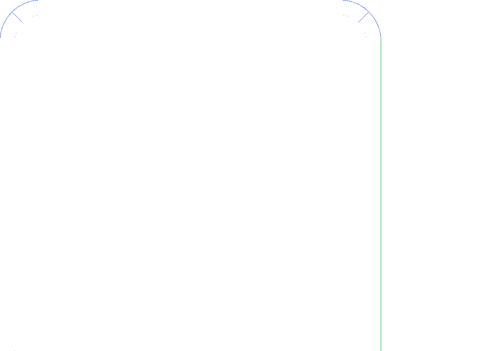
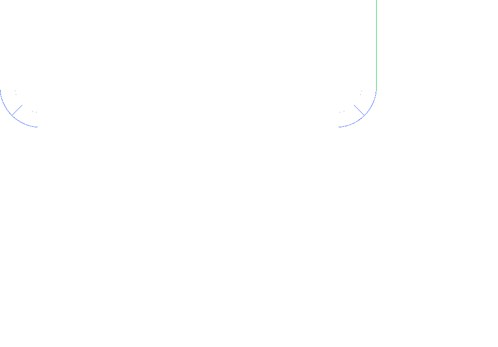
| class | regions | pixels | union bbox (CSS px) | largest px | maximum magnitude |
|---|---|---|---|---|---|
| ColorErr | 125 | 297 | 0,0 → 260,240 | 15 | total 0.05% · largest 0.002460% · max ΔE 2.7 |
| Extra | 1 | 671 | 260,25 → 260,240 | 671 | total 0.1% · largest 0.1% |
| class | bbox (CSS px) | area% | magnitude | reason |
|---|---|---|---|---|
| Extra | 260,25 → 260,240 | 0.1 | candidate adds paint absent from reference (0.1%) | |
| AntialiasCoverage | 251,7 → 253,9 | 0.002460 | ΔRGB(0,-1,-1) | antialiasing coverage residue on a shared outline |
| AntialiasCoverage | 14,2 → 17,3 | 0.001804 | ΔRGB(0,-4,-4) | antialiasing coverage residue on a shared outline |
| AntialiasCoverage | 256,14 → 257,16 | 0.001804 | ΔRGB(0,-6,-6) | antialiasing coverage residue on a shared outline |
| AntialiasCoverage | 2,14 → 3,17 | 0.001804 | ΔRGB(0,-4,-4) | antialiasing coverage residue on a shared outline |
| AntialiasCoverage | 234,0 → 236,0 | 0.001312 | ΔRGB(0,-6,-6) | antialiasing coverage residue on a shared outline |
| AntialiasCoverage | 24,0 → 26,0 | 0.001148 | ΔRGB(0,-9,-9) | antialiasing coverage residue on a shared outline |
| AntialiasCoverage | 0,24 → 0,26 | 0.001148 | ΔRGB(0,-9,-9) | antialiasing coverage residue on a shared outline |
| AntialiasCoverage | 249,5 → 250,6 | 0.000984 | ΔRGB(0,-4,-4) | antialiasing coverage residue on a shared outline |
| AntialiasCoverage | 9,6 → 10,7 | 0.000984 | ΔRGB(0,-4,-4) | antialiasing coverage residue on a shared outline |
| AntialiasCoverage | 6,9 → 7,10 | 0.000984 | ΔRGB(0,-4,-4) | antialiasing coverage residue on a shared outline |
| AntialiasCoverage | 260,23 → 260,24 | 0.000984 | ΔRGB(0,-6,-6) | antialiasing coverage residue on a shared outline |
| AntialiasCoverage | 236,0 → 238,0 | 0.000820 | ΔRGB(0,-7,-7) | antialiasing coverage residue on a shared outline |
| AntialiasCoverage | 22,0 → 23,0 | 0.000656 | ΔRGB(0,-7,-7) | antialiasing coverage residue on a shared outline |
| AntialiasCoverage | 20,1 → 21,1 | 0.000656 | ΔRGB(0,-6,-6) | antialiasing coverage residue on a shared outline |
| AntialiasCoverage | 238,1 → 239,1 | 0.000656 | ΔRGB(0,-4,-4) | antialiasing coverage residue on a shared outline |
| AntialiasCoverage | 239,1 → 240,1 | 0.000656 | ΔRGB(0,-4,-4) | antialiasing coverage residue on a shared outline |
| AntialiasCoverage | 246,4 → 246,4 | 0.000656 | ΔRGB(0,-4,-4) | antialiasing coverage residue on a shared outline |
| AntialiasCoverage | 13,4 → 13,4 | 0.000656 | ΔRGB(0,-4,-4) | antialiasing coverage residue on a shared outline |
| AntialiasCoverage | 248,5 → 248,5 | 0.000656 | ΔRGB(0,-4,-4) | antialiasing coverage residue on a shared outline |
| AntialiasCoverage | 11,5 → 12,5 | 0.000656 | ΔRGB(0,-4,-4) | antialiasing coverage residue on a shared outline |
| AntialiasCoverage | 254,10 → 254,11 | 0.000656 | ΔRGB(0,-4,-4) | antialiasing coverage residue on a shared outline |
| AntialiasCoverage | 5,11 → 5,12 | 0.000656 | ΔRGB(0,-4,-4) | antialiasing coverage residue on a shared outline |
| AntialiasCoverage | 255,12 → 255,12 | 0.000656 | ΔRGB(0,-4,-4) | antialiasing coverage residue on a shared outline |
| AntialiasCoverage | 255,12 → 256,13 | 0.000656 | ΔRGB(0,-4,-4) | antialiasing coverage residue on a shared outline |
| AntialiasCoverage | 4,13 → 4,13 | 0.000656 | ΔRGB(0,-4,-4) | antialiasing coverage residue on a shared outline |
| AntialiasCoverage | 1,20 → 1,21 | 0.000656 | ΔRGB(0,-6,-6) | antialiasing coverage residue on a shared outline |
| AntialiasCoverage | 259,21 → 259,22 | 0.000656 | ΔRGB(0,-6,-6) | antialiasing coverage residue on a shared outline |
| AntialiasCoverage | 0,22 → 0,23 | 0.000656 | ΔRGB(0,-7,-7) | antialiasing coverage residue on a shared outline |
| AntialiasCoverage | 20,1 → 20,1 | 0.000492 | ΔRGB(0,-7,-7) | antialiasing coverage residue on a shared outline |
| AntialiasCoverage | 19,1 → 19,1 | 0.000492 | ΔRGB(0,-6,-6) | antialiasing coverage residue on a shared outline |
| AntialiasCoverage | 241,1 → 241,1 | 0.000492 | ΔRGB(0,-7,-7) | antialiasing coverage residue on a shared outline |
| AntialiasCoverage | 18,2 → 18,2 | 0.000492 | ΔRGB(0,-6,-6) | antialiasing coverage residue on a shared outline |
| AntialiasCoverage | 242,2 → 243,2 | 0.000492 | ΔRGB(0,-6,-6) | antialiasing coverage residue on a shared outline |
| AntialiasCoverage | 258,17 → 258,18 | 0.000492 | ΔRGB(0,-4,-4) | antialiasing coverage residue on a shared outline |
| AntialiasCoverage | 2,18 → 2,18 | 0.000492 | ΔRGB(0,-6,-6) | antialiasing coverage residue on a shared outline |
| AntialiasCoverage | 1,19 → 1,19 | 0.000492 | ΔRGB(0,-6,-6) | antialiasing coverage residue on a shared outline |
| AntialiasCoverage | 259,19 → 259,20 | 0.000492 | ΔRGB(0,-7,-7) | antialiasing coverage residue on a shared outline |
| AntialiasCoverage | 1,20 → 1,20 | 0.000492 | ΔRGB(0,-7,-7) | antialiasing coverage residue on a shared outline |
| AntialiasCoverage | 259,20 → 259,21 | 0.000492 | ΔRGB(0,-7,-7) | antialiasing coverage residue on a shared outline |
| AntialiasCoverage | 242,2 → 242,2 | 0.000328 | ΔRGB(0,-6,-6) | antialiasing coverage residue on a shared outline |
| AntialiasCoverage | 17,2 → 17,2 | 0.000328 | ΔRGB(0,-6,-6) | antialiasing coverage residue on a shared outline |
| AntialiasCoverage | 243,2 → 244,2 | 0.000328 | ΔRGB(0,-4,-4) | antialiasing coverage residue on a shared outline |
| AntialiasCoverage | 244,3 → 244,3 | 0.000328 | ΔRGB(0,-4,-4) | antialiasing coverage residue on a shared outline |
| AntialiasCoverage | 244,3 → 245,3 | 0.000328 | ΔRGB(0,-4,-4) | antialiasing coverage residue on a shared outline |
| AntialiasCoverage | 245,3 → 245,3 | 0.000328 | ΔRGB(0,-2,-2) | antialiasing coverage residue on a shared outline |
| AntialiasCoverage | 14,4 → 14,4 | 0.000328 | ΔRGB(0,-6,-6) | antialiasing coverage residue on a shared outline |
| AntialiasCoverage | 247,4 → 247,4 | 0.000328 | ΔRGB(0,-4,-4) | antialiasing coverage residue on a shared outline |
| AntialiasCoverage | 12,4 → 12,4 | 0.000328 | ΔRGB(0,-4,-4) | antialiasing coverage residue on a shared outline |
| AntialiasCoverage | 4,12 → 4,12 | 0.000328 | ΔRGB(0,-4,-4) | antialiasing coverage residue on a shared outline |
| AntialiasCoverage | 256,13 → 256,14 | 0.000328 | ΔRGB(0,-4,-4) | antialiasing coverage residue on a shared outline |
| AntialiasCoverage | 4,14 → 4,14 | 0.000328 | ΔRGB(0,-6,-6) | antialiasing coverage residue on a shared outline |
| AntialiasCoverage | 258,17 → 258,17 | 0.000328 | ΔRGB(0,-7,-7) | antialiasing coverage residue on a shared outline |
| AntialiasCoverage | 2,17 → 2,17 | 0.000328 | ΔRGB(0,-6,-6) | antialiasing coverage residue on a shared outline |
| AntialiasCoverage | 258,18 → 258,19 | 0.000328 | ΔRGB(0,-7,-7) | antialiasing coverage residue on a shared outline |
| AntialiasCoverage | 247,4 → 247,4 | 0.000164 | ΔRGB(0,-9,-9) | antialiasing coverage residue on a shared outline |
| AntialiasCoverage | 12,5 → 12,5 | 0.000164 | ΔRGB(0,-9,-9) | antialiasing coverage residue on a shared outline |
| AntialiasCoverage | 11,6 → 11,6 | 0.000164 | ΔRGB(0,-10,-10) | antialiasing coverage residue on a shared outline |
| AntialiasCoverage | 250,6 → 250,6 | 0.000164 | ΔRGB(10,8,8) | antialiasing coverage residue on a shared outline |
| AntialiasCoverage | 250,7 → 250,7 | 0.000164 | ΔRGB(0,-9,-9) | antialiasing coverage residue on a shared outline |
| AntialiasCoverage | 9,7 → 9,7 | 0.000164 | ΔRGB(0,-7,-7) | antialiasing coverage residue on a shared outline |
| AntialiasCoverage | 9,7 → 9,7 | 0.000164 | ΔRGB(0,-7,-7) | antialiasing coverage residue on a shared outline |
| AntialiasCoverage | 8,8 → 8,8 | 0.000164 | ΔRGB(0,-7,-7) | antialiasing coverage residue on a shared outline |
| AntialiasCoverage | 8,8 → 8,8 | 0.000164 | ΔRGB(14,16,16) | antialiasing coverage residue on a shared outline |
1<!DOCTYPE html>
2<html>
3<head>
4<meta charset="utf-8">
5<style>
6 /* box-decoration-break:slice (default) WITH border-radius across a page break.
7 Under slice the box is rendered whole and then sliced, so the rounded
8 corners exist only where the real box corners are: the TOP corners are
9 rounded on page 1 (open, square at the bottom cut) and the BOTTOM corners
10 are rounded on page 2 (open, square at the top cut). The multi-page harness
11 asserts the page COUNT (2) and diffs both pages. */
12 @page { size: 344px 240px; margin: 0; }
13 * { margin: 0; padding: 0; box-sizing: border-box; }
14 html { font-family: ParitySans; line-height: 1.5; background: #ffffff; }
15 .box {
16 width: 260px;
17 background: #ffd9d9;
18 border: 10px solid #6b1414;
19 border-radius: 28px;
20 padding: 14px;
21 box-decoration-break: slice;
22 }
23 .row { height: 64px; break-inside: avoid; }
24 .a { background: #d94f4f; }
25 .b { background: #2d6cdf; }
26 .c { background: #2e9e5b; }
27 .d { background: #e08a1e; }
28</style>
29</head>
30<body>
31 <div class="box">
32 <div class="row a"></div>
33 <div class="row b"></div>
34 <div class="row c"></div>
35 <div class="row d"></div>
36 </div>
37</body>
38</html>


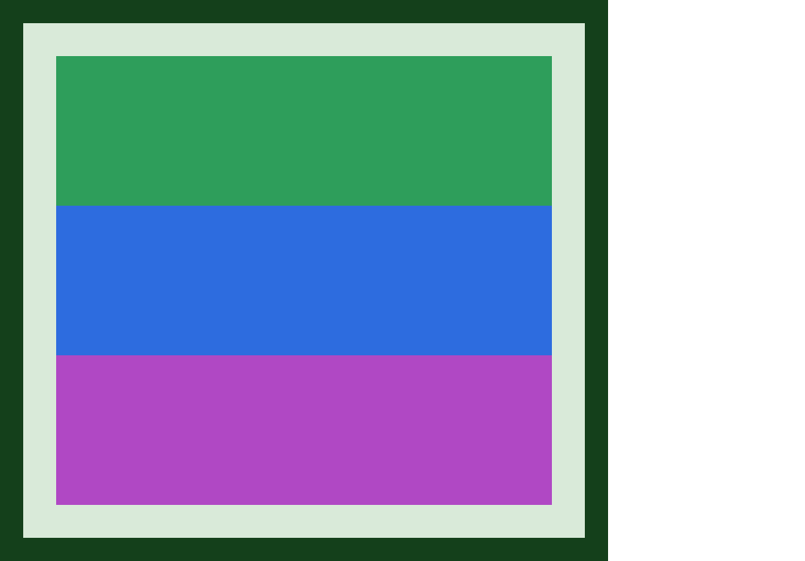


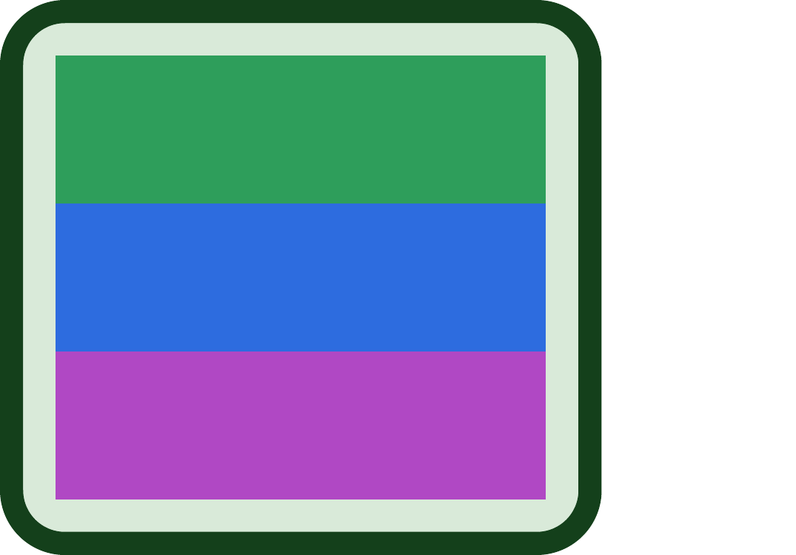


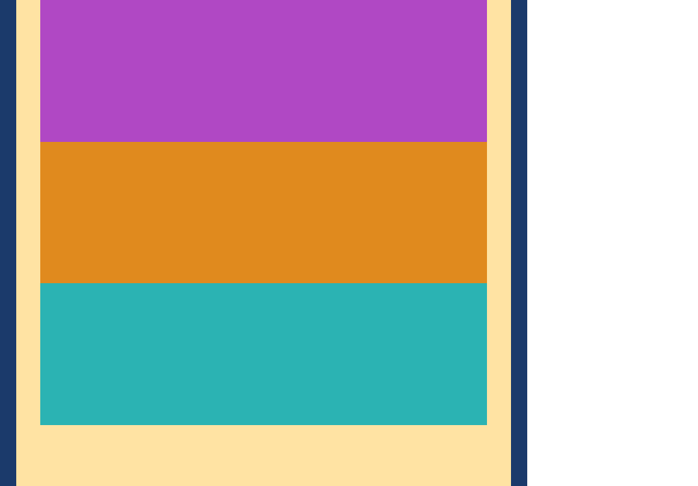


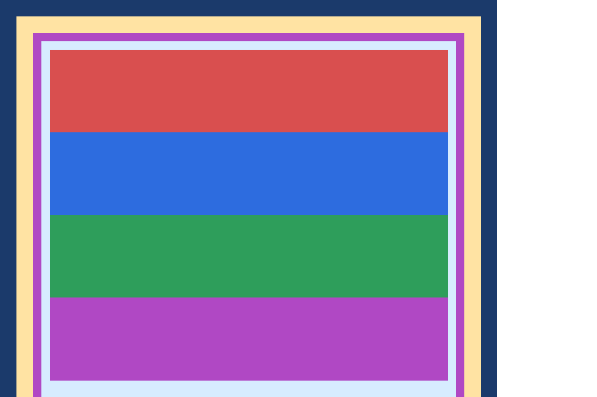


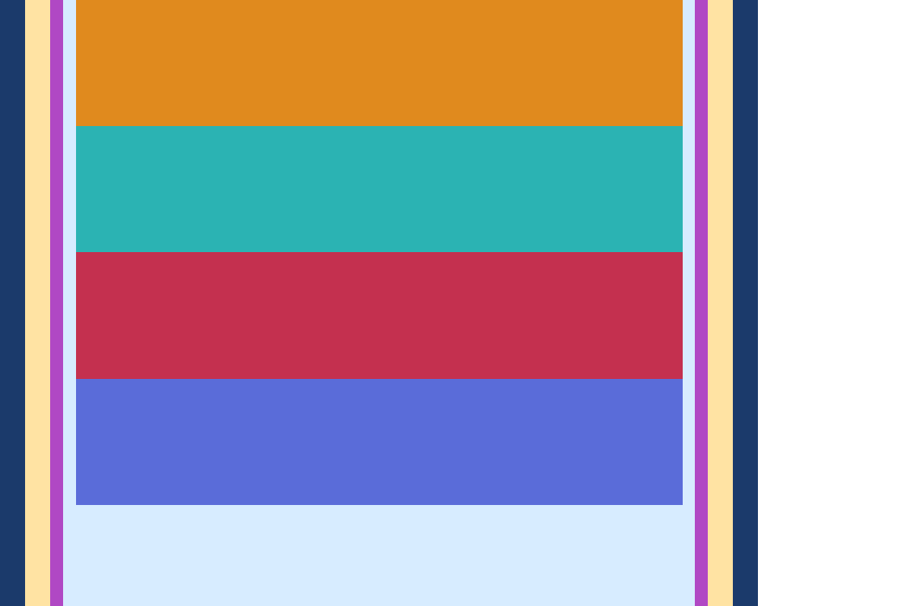


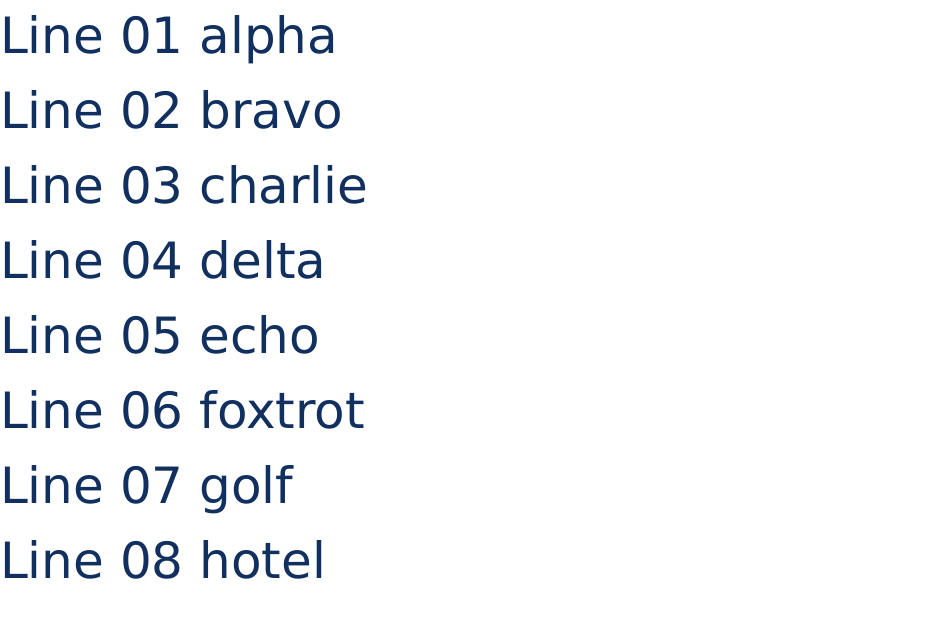


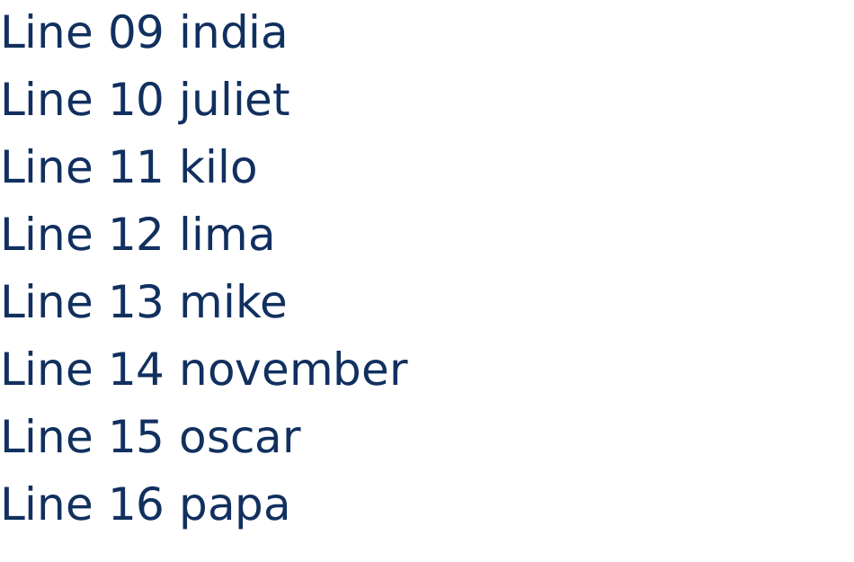

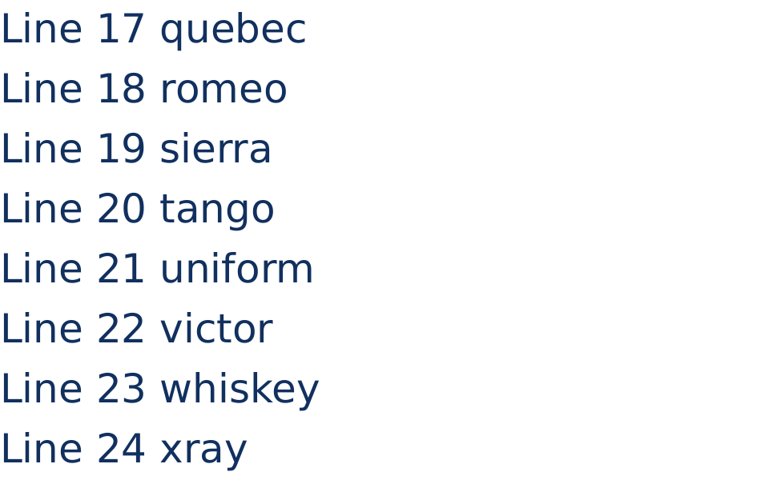


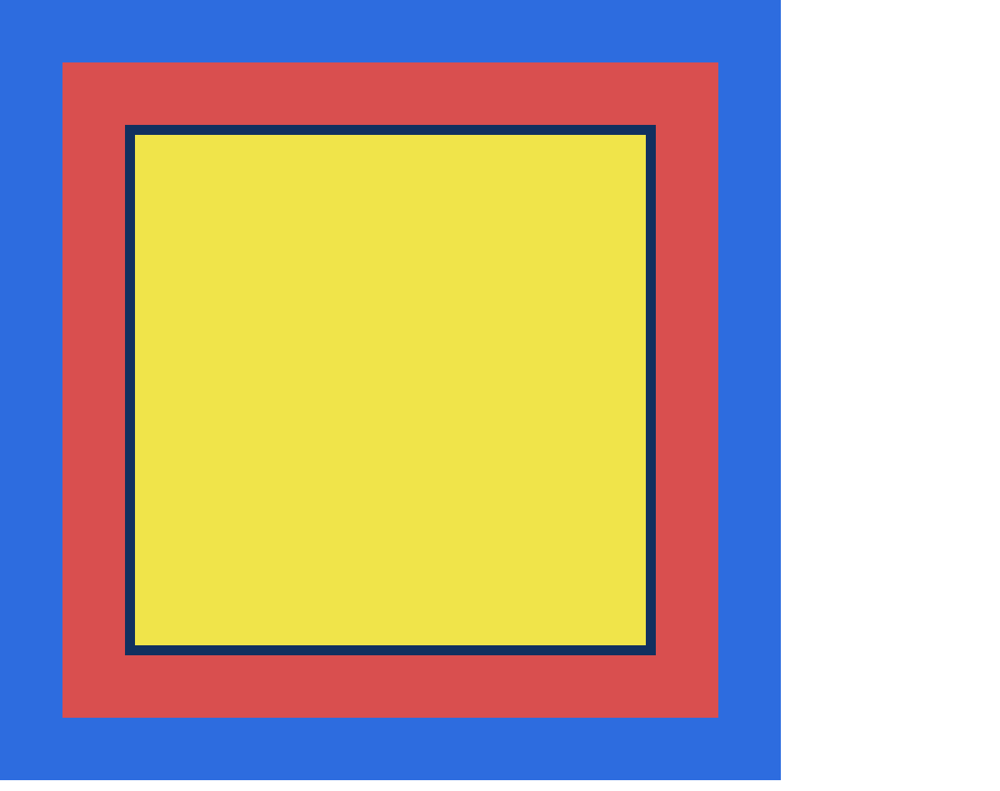


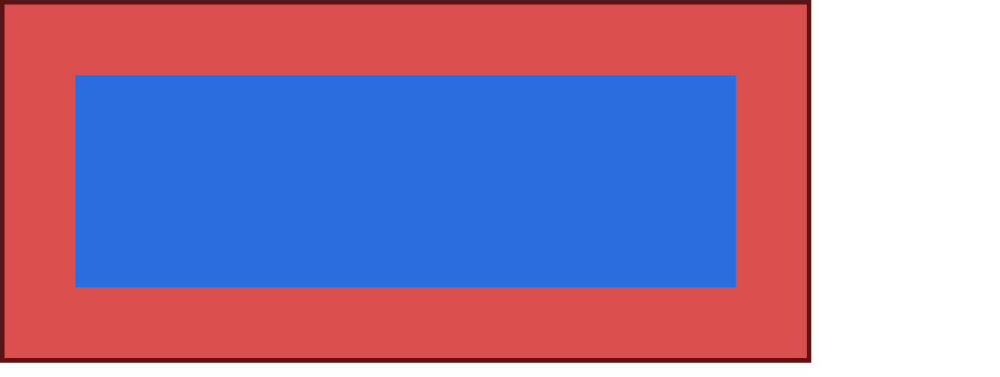
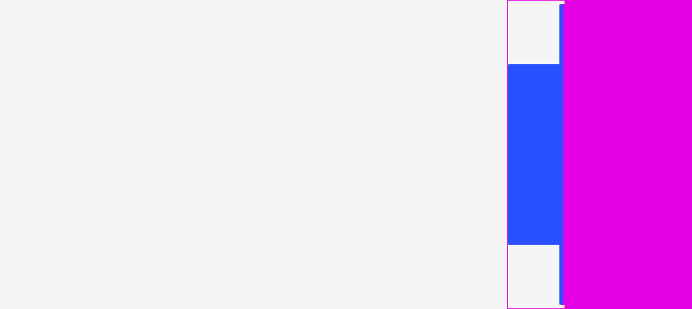


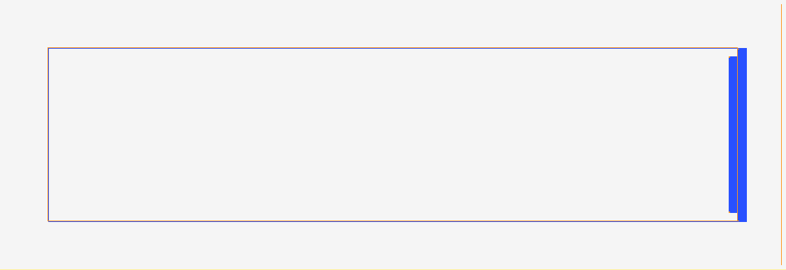